und
und  die Parameter sind,
die Parameter sind,  ein Zufallsfehlerterm mit Mittelwert ist und die Varianz
ein Zufallsfehlerterm mit Mittelwert ist und die Varianz  -- passt die lineare Regression die Daten an ein Modell der folgenden Form an:
-- passt die lineare Regression die Daten an ein Modell der folgenden Form an:Für einen gegebenen Datensatz -- wobei X die unabhängige Variable und Y die abhängige Variable ist, und die Parameter sind, ein Zufallsfehlerterm mit Mittelwert ist und die Varianz -- passt die lineare Regression die Daten an ein Modell der folgenden Form an:
| 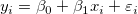 |
(1) |
|---|
Die Schätzung der kleinsten Quadrate wird verwendet, um die Summe von n quadrierten Abweichungen zu minimieren.
|
(2) |
Die geschätzten Parameter des linearen Modells können folgendermaßen berechnet werden:
|
(3) |
|
(4) |
wobei:
 , , |
(5) |
|---|
und
 (korrigiert) (korrigiert) |
(6) |
|---|
| (unkorrigiert) |
(7) |
|---|
| Hinweis: Wenn der Schnittpunkt vom Modell ausgeschlossen ist, werden die Koeffizienten mit der unkorrigierten Formel berechnet. |
Daher schätzen wir die Regressionsfunktion folgendermaßen:
|
(8) |
Das Residuum  ist definiert als:
ist definiert als:
|
(9) |
Die Formel in (2) muss so minimiert werden, dass sie gleich der Summe der Fehlerquadrate ist.
|
(10) |
wenn die Schätzung der kleinsten Quadrate und zum Schätzen von und verwendet werden.
Im obigen Abschnitt wird angenommen, dass es eine konstante Varianz in den Fehlern gibt. Wenn wir jedoch die Versuchsdaten anpassen, müssen wir vielleicht den Fehler des Instruments im Anpassungsprozess berücksichtigen (der die Genauigkeit und Präzision eines Messinstruments wiedergibt). Daher wird die Annahme der konstanten Varianz in den Fehlern verletzt. Wir müssen annehmen, dass normalverteilt ist mit einer nicht konstanten Varianz und die Fehler als 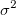 agieren, was als Gewichtung bei der Anpassung verwendet werden kann. Die Gewichtung wird definiert als:
Das Anpassungsmodell wird wie folgt geändert:
![\sum_{i=1}^n w_i (y_i-\hat y_i)^2=\sum_{i=1}^n w_i [y_i-(\hat{\beta _0}+\hat{\beta _1}x_i)]^2](../images/Linear_Regression_Results/math-b91af30efe2f541053551a9080cdf9de.png "\sum_{i=1}^n w_i (y_i-\hat y_i)^2=\sum_{i=1}^n w_i [y_i-(\hat{\beta _0}+\hat{\beta _1}x_i)]^2") |
(11) |
|---|
Die Gewichtungsfaktoren  können durch drei Formeln gegeben sein:
können durch drei Formeln gegeben sein:
Der Fehlerbalken wird in der Berechnung nicht als Gewichtung behandelt.
 |
(12) |
|---|
Der Wert der instrumentellen Gewichtung ist antiproportional zu Instrumentenfehlern, so dass ein Versuch mit kleinen Fehlern eine große Gewichtung haben wird, da er im Vergleich zu Versuchen mit größeren Fehlern präziser ist.
 |
(13) |
|---|
| Hinweis: Die Fehler als Gewichtung sollten der Spalte "Y-Fehler" im Arbeitsblatt zugewiesen werden. |
Fester Schnittpunkt mit der Y-Achse legt den Y-Schnittpunkt auf einen festen Wert fest, während der Gesamtfreiheitsgrad n*=n-1 ist aufgrund des festgelegten Schnittpunkts mit der Y-Achse.
Die Option Skalierungsfehler mit Quadrat (Reduziertes Chi-Qdr.) ist verfügbar, wenn mit Gewichtung angepasst wird. Diese Option beeinflusst nur den Fehler auf die Parameter, die der Anpassungsprozess meldet, und nicht den Anpassungsprozess selbst oder die Daten in irgendeiner Weise. Die Option ist standardmäßig aktiviert, und wird zum Berechnen der Fehler auf die Parameter berücksichtigt. Ansonsten wird die Varianz von nicht zur Fehlerberechnung berücksichtigt. Nehmen Sie die Kovarianzmatrix als ein Beispiel: Skalierungsfehler mit Quadrat (Reduziertes Chi-Qdr.) verwenden:
| 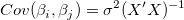 | |
|---|---|
|
(14) |
Keinen Skalierungsfehler mit Quadrat (Reduziertes Chi-Qdr.) verwenden:
| 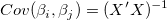 |
(15) |
|---|
Für die gewichtete Anpassung wird ^{-1}\,\!") anstatt
anstatt ^{-1}\,\!") verwendet.
verwendet.
Wenn Sie eine lineare Anpassung durchführen, erstellen Sie ein Analyseberichtsblatt, dass die berechneten Eigenschaften enthält. Die Tabellenberichte Parameter modellieren Steigung und Schnittpunkt mit der Y-Achse (Zahlen in Klammern zeigen, wie die Eigenschaften abgeleitet werden):
Siehe Formel (3)&(4).
Für jeden Parameter kann der Standardfehler, wie folgt, ermittelt werden:
|
(16) |
|
(17) |
wobei die Beispielvarianz (oder Quadrat des Mittelwertfehlers ) folgendermaßen geschätzt werden kann:
|
(18) |
RSS steht für die Residuensumme des Quadrats (oder Fehlersumme des Quadrats, SSE), die tatsächlich die Summe der Quadrate der vertikalen Abweichungen von jedem Datenpunkt aus zur angepassten Linie darstellt. Es kann wie folgt berechnet werden:
|
(19) |
Hinweis: Im Bezug auf , wenn der Schnittpunkt mit der Y-Achse in dem Modell enthalten ist, ist  . Ansonsten . . Ansonsten . |
Gelten die Regressionsannahmen, haben wir:
und  |
(20) |
|---|
Die t-Tests können verwendet werden, um zu untersuchen, ob die Fit-Parameter signifikant von Null abweichen. Das bedeutet, wir können testen, ob 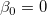 (falls wahr, bedeutet dies, dass die angepasste Linie durch den Ursprung verläuft) oder  . Die Hypothesen der t-Tests sind:
. Die Hypothesen der t-Tests sind:
 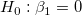
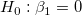
Die t-Werte können wie folgt berechnet werden:
und  |
(21) |
|---|
Mit dem berechneten t-Wert können wir entscheiden, ob die entsprechende Nullhypothese verworfen werden soll oder nicht. Gewöhnlich können wir für ein gegebenes Konfidenzintervall  die Hypothese
die Hypothese  verwerfen, wenn 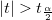. Außerdem wird der p-Wert oder die Signifikanzebene mit einem t-Test angezeigt. Wir weisen auch die Nullhypothese zurück, wenn der p-Wert kleiner ist als .
verwerfen, wenn 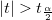. Außerdem wird der p-Wert oder die Signifikanzebene mit einem t-Test angezeigt. Wir weisen auch die Nullhypothese zurück, wenn der p-Wert kleiner ist als .
Die Wahrscheinlichkeit, dass in dem t-Test oben wahr ist.
)\,\!") |
(22) |
|---|
wobei tcdf(t, df) die untere Wahrscheinlichkeit für die studentisierte t-Verteilung mit dem df-Freiheitsgrad berechnet.
Mit dem t-Wert können wir das \times 100\%") -Konfidenzintervall für jeden Parameter berechnen:
-Konfidenzintervall für jeden Parameter berechnen:
}\varepsilon _{\hat \beta _j}\leq \hat \beta _j\leq \hat \beta _j+t_{(\frac \alpha 2,n^{*}-k)}\varepsilon _{\hat \beta _j}") |
(23) |
|---|
wobei  und
und  für Oberes Konfidenzintervall bzw. Unteres Konfidenzintervall steht.
für Oberes Konfidenzintervall bzw. Unteres Konfidenzintervall steht.
Das Konfidenzintervall halbe Breite ist:
 |
(24) |
|---|
wobei OEG und UEG das obere Konfidenzintervall bzw. untere Konfidenzintervall ist.
Die Schlüsselwerte der linearen Anpassung werden in der Statistiktabelle zusammengefasst (Zahlen in Klammern zeigen, wie Eigenschaften berechnet werden):
Der Freiheitsgrad des Fehlers Weitere Einzelheiten finden Sie in der ANOVA-Tabelle.
Die Residuensumme der Quadrate, siehe Formel (19).
Siehe Formel (14).
Die Qualität der linearen Regression kann mit dem Determinationskoeffizienten (COD) oder  gemessen werden, die folgendermaßen berechnet werden können:
gemessen werden, die folgendermaßen berechnet werden können:
|
(25) |
|
wobei TSS die Gesamtsumme der Quadrate und RSS die Residuensumme des Quadrats ist. ist ein Wert zwischen 0 und 1. Liegt er nahe 1, wird die Beziehung zwischen X und Y als stark betrachtet, und wir können einen höheren Konfidenzgrad in unserem Regressionsmodell haben.
Des Weiteren können wir den korrigierten wie folgt berechnen:
 |
(26) |
|---|
Der R-Wert ist die Quadratwurzel von :
 |
(27) |
|---|
Bei der einfachen linearen Regression ist der Korrelationskoeffizient zwischen x und y, der als r bezeichnet wird, gleich:
 falls falls  positiv ist positiv ist |
(28) |
|---|---|
 falls negativ ist falls negativ ist |
Quadratwurzel des Mittelwerts des Fehlers oder die residuale Standardabweichung ist gleich:
|
(29) |
Ist gleich der Quadratwurzel von RSS:
|
(30) |
Die ANOVA-Tabelle der linearen Anpassung ist:
| Freiheitsgrade | Summe der Quadrate | Mittelwert der Quadrate | F -Wert | Wahrsch. > F | |
|---|---|---|---|---|---|
| Modell | 1 | p-Wert | |||
| Fehler | n* - 1 | RSS | MSE = RSS / (n* - 1) | ||
| Gesamt | n* | TSS |
Hinweis: Ist der Schnittpunkt im Modell enthalten, ist n*=n-1. Andernfalls ist n*=n und die Gesamtsumme der Quadrate ist unkorrigiert. Wenn die Steigung fest ist, ist  = 0. = 0. |
Dabei ist hier die Gesamtsumme der Quadrate, TSS:
^2") (korrigiert) (korrigiert) |
(31) |
|---|---|
 (unkorrigiert) (unkorrigiert) |
Der F-Wert ist ein Test, ob das Anpassungsmodell sich signifikant von dem Modell Y = konstant unterscheidet.
Der p-Wert bzw. die Signifikanzebene wird mit einem F-Test ermittelt. Wenn der p-Wert kleiner als ist, unterscheidet sich das Anpassungsmodell signifikant von dem Modell Y = konstant.
Wenn der Schnittpunkt mit der Y-Achse bei einem bestimmten Wert festgelegt wird, ist der p-Wert für den F-Test nicht bedeutungsvoll und unterscheidet sich von dem in der linearen Regression ohne die Nebenbedingung des Schnittpunkts mit der Y-Achse.
Um den Test auf fehlende Anpassung auszuführen, müssen Sie sich wiederholende Beobachtungen zur Verfügung haben, d. h. "replizierte Daten" , so dass mindestens einer der X-Werte sich innerhalb des Datensatzes oder innerhalb mehrerer Datensätze wiederholt, wenn der Modus Zusammengefasster Fit ausgewählt ist.
Notationen, die für die Anpassung mit replizierten Daten verwenden werden:
 ist die j-te Messung, die beim i-ten X-Wert im Datensatz gemacht wurde. ist die j-te Messung, die beim i-ten X-Wert im Datensatz gemacht wurde. |
 ist der Durchschnitt von allen Y-Werten beim i-ten X-Wert. ist der Durchschnitt von allen Y-Werten beim i-ten X-Wert. |
| 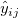 ist die prognostizierte Antwort für die j-te Messung, die beim i-ten X-Wert gemacht wurde. |
Die Summe der Quadrate in der Tabelle unten wird ausgedrückt mit:
^2") |
|---|
^2") |
^2") |
Die Tabelle des Tests auf fehlende Anpassung der linearen Anpassung ist:
| Freiheitsgrade | Summe der Quadrate | Mittelwert der Quadrate | F -Wert | Wahrsch. > F | |
|---|---|---|---|---|---|
| Fehlende Anpassung | c-2 | LFSS | MSLF = LFSS / (c - 2) | MSLF / MSPE | p-Wert |
| Reiner Fehler | n - c | PESS | MSPE = PESS / (n - c) | ||
| Fehler | n*-1 | RSS |
|
Hinweis: Wenn der Schnittpunkt mit der Y-Achse im Modell enthalten ist, dann ist n*=n-1. Andernfalls ist n*=n und die Gesamtsumme der Quadrate ist unkorrigiert. Wenn die Steigung fest ist, ist c bezeichnet die Anzahl der eindeutigen X-Werte. Wenn der Schnittpunkt mit der Y-Achse festgelegt ist, ist der Freiheitsgrad für die fehlende Anpassung c-1. |
Die Kovarianzmatrix der linearen Regression wird berechnet durch:
 & Cov(\beta _0,\beta _1)\\ Cov(\beta _1,\beta _0) & Cov(\beta _1,\beta _1) \end{pmatrix}=\sigma ^2\frac 1{SXX}\begin{pmatrix} \sum \frac{x_i^2}n & -\bar x \\-\bar x & 1 \end{pmatrix}") |
(32) |
|---|
Die Korrelation zwischen zwei beliebigen Parametern ist:
|
(33) |
Die Ausreißer sind die Punkte, deren absolute Werte im studentisierten Residuendiagramm größer als 2 sind.
Studentisiertes Residuum wird in Ausreißer durch Transformieren der Residuen erkennen eingeführt.
 steht für reguläres Residuum .
steht für reguläres Residuum .
 |
(34) |
|---|
Sind auch bekannt als intern studentisierte Residuen.
 |
(35) |
|---|
Sind auch bekannt als extern studentisierte Residuen.
 |
(36) |
|---|
In den Gleichungen der studentisierten und studentisiert gelöschten Residuen ist  das i-te diagonale Element der Matrix
das i-te diagonale Element der Matrix  :
:
|
(37) |
 bedeutet die Varianz wird berechnet, basierend auf alle Punkte, schließt aber den iten Punkt aus.
bedeutet die Varianz wird berechnet, basierend auf alle Punkte, schließt aber den iten Punkt aus.
Für einen bestimmten Wert  liegt das -Konfidenzintervall für den Mittelwert von
liegt das -Konfidenzintervall für den Mittelwert von  bei :
bei :
|
(38) |
Und das -Prognoseintervall für den Mittelwert von bei ist:
|
(39) |
Angenommen das Variablenpaar (X, Y) folgt einer zweidimensionalen Normalverteilung, so können wir die Korrelation zwischen zwei Variablen durch eine Konfidenzellipse untersuchen. Die Konfidenzellipse ist bei (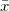, ) zentriert und die große Halbachse a und die kleine Halbachse b können folgendermaßen ausgedrückt werden:
) zentriert und die große Halbachse a und die kleine Halbachse b können folgendermaßen ausgedrückt werden:
|
(40) |
Für ein gegebenes Konfidenzniveau von :
|
(41) |
|
(42) |
|
(43) |
Wählen Sie einen Residuentyp unter Regulär, Standardisiert, Studentisiert, Studentisiert gelöscht für die Diagramme.
Punktdiagramm der Residuen  vs. unabhängige Variable
vs. unabhängige Variable  ; jede Zeichnung befindet sich in einem separaten Diagramm.
; jede Zeichnung befindet sich in einem separaten Diagramm.
Punktdiagramm der Residuen vs. Anpassungsergebnisse 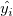
vs. Abfolgenummer 
Histogramm des Residuums
Residuen vs. verzögertes Residuum }")
Das Wahrscheinlichkeitsnetz der Residuen (Normal) kann verwendet werden, um zu prüfen, ob die Varianz ebenfalls normalverteilt ist. Wenn das sich ergebende Diagramm ungefähr linear ist, nehmen wir weiterhin an, dass die Fehlerterme normal verteilt sind. Das Diagramm basiert auf Perzentilen versus geordnete Residuen. Die Perzentile werden geschätzt mit
}{(n+\frac{1}{4})}")
wobei n die Gesamtanzahl der Datensätze und i die i-ten Daten sind. Bitte lesen Sie auch Wahrscheinlichkeitsdiagramm und Q-Q-Diagramm.